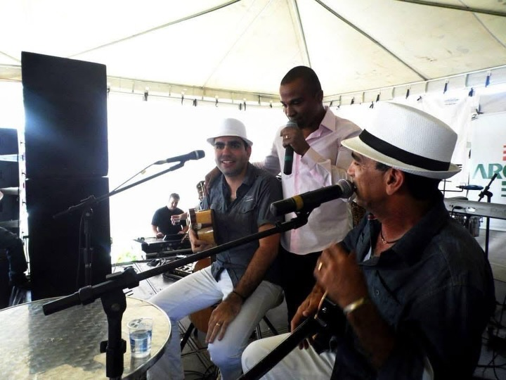
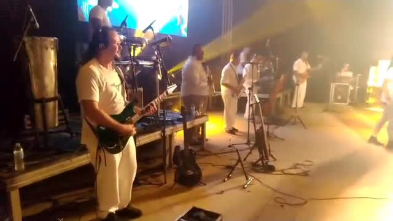
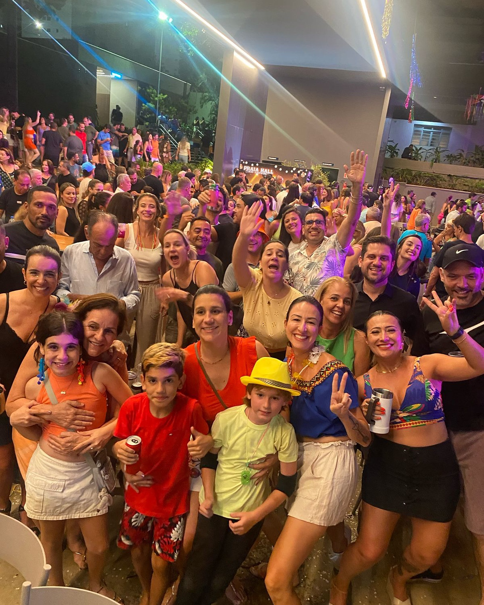
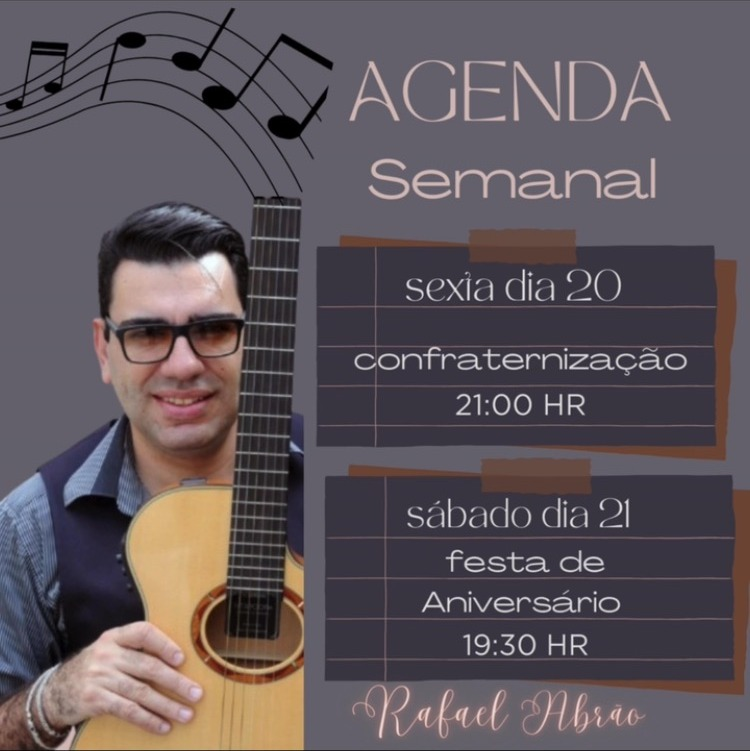

26 anos de palco e estúdio. Voz, violão e um repertório que conquista qualquer plateia, em Uberlândia-MG e onde o seu evento estiver.
Pop rock nacional e internacional, pagode, samba, axé, forró, sertanejo raiz e muito mais.
Foram 26 anos trabalhando com música, gravando em estúdios e nos palcos.Rafael Abrão
Cresci na estrada com a Lísias e Banda, a banda do meu pai, Lísias Abrão. Do palco à produção, aprendi a música por inteiro: tocar, cantar, montar o show e levar a banda pelo Brasil.


Presença de palco e repertório eclético. Clique em um vídeo para assistir aqui mesmo.
Casas, empresas e palcos que já contaram com a minha música.
Anos de estrada com a banda do meu pai, em palcos de todo o Brasil, ao lado de vários artistas de renome.
London Pub, Point Barolo e Marcelinho Espetaria.
Castelli Hall, Castelli Master e várias casas pelo Brasil inteiro.
Banda de baile em formaturas e grandes festas.
Confraternização da Arcom, com participação de Alexandre Pires, e o evento Para Tudo Legítimo, que me convidou mais de um ano seguido.
Jingles para publicidade, gravados no meu estúdio em Uberlândia.


Gravada em 11/07/2020, com a Lísias e Banda.